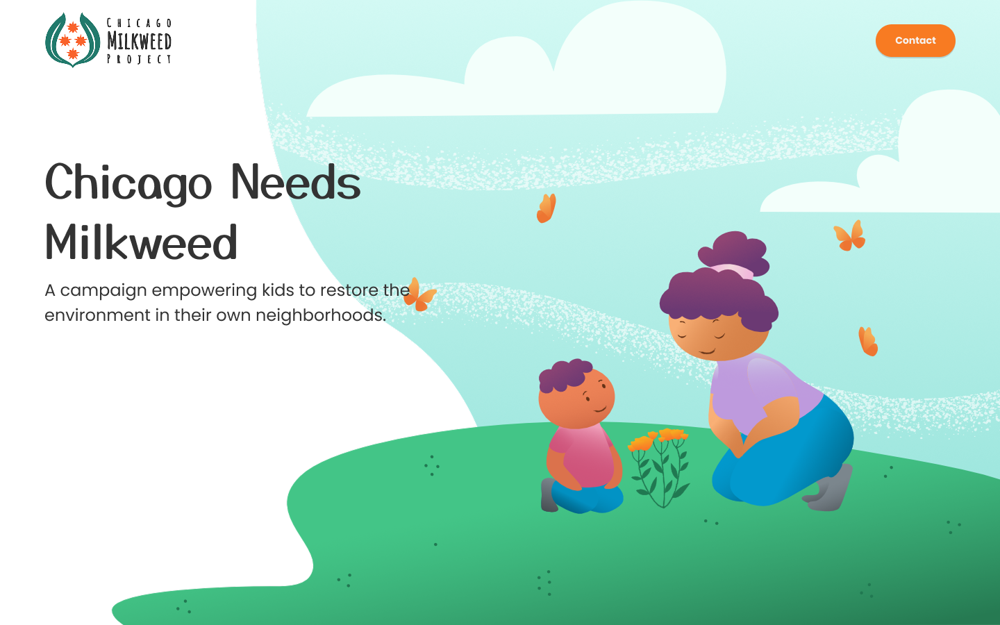
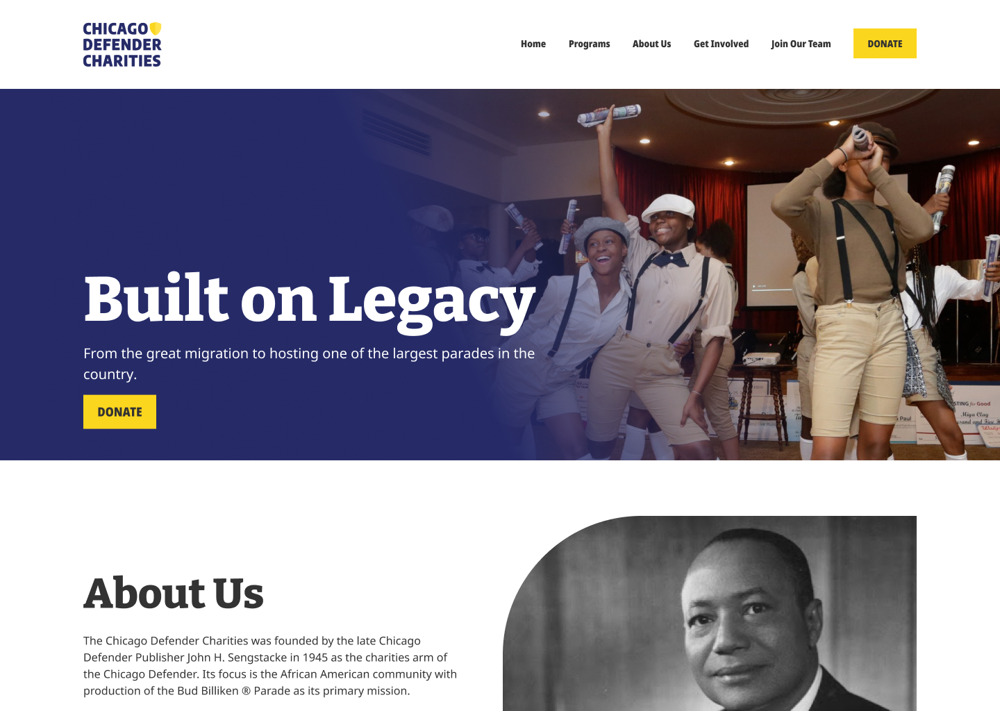
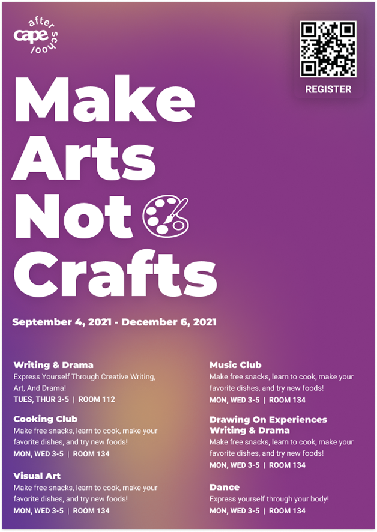
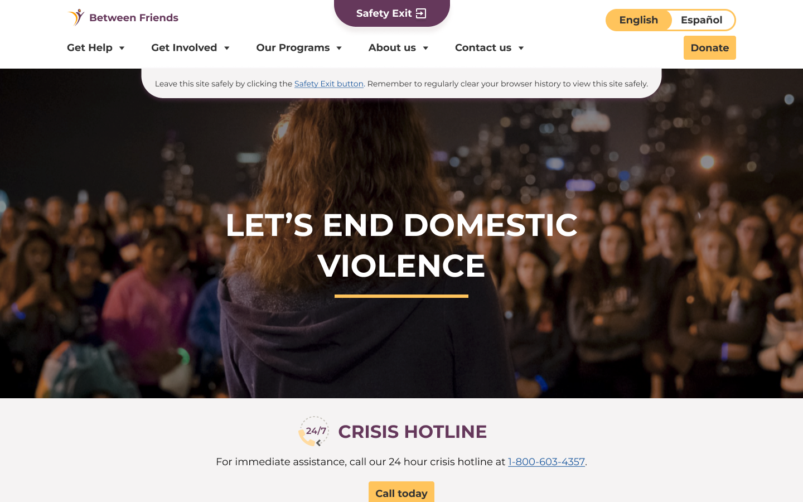
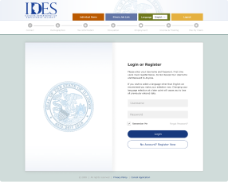

Portfolio
Civic Tech
Research and design work from my time leading Code for Chicago's Code for America brigade, and my capstone project I did during grad school.
Research and design work from my time leading Code for Chicago's Code for America brigade, and my capstone project I did during grad school.
Building brand identity and content that communicates clearly.

Building a brand and website to help Chicago kids restore Monarch habitat.

Translating dense legal info into a digestible flyer during COVID-19.

Consolidating a scattered online presence, and staying accountable when feedback broke down.
Research and structural work to make services and products easier to use.

Mapping a service from every angle, and rebuilding a brand to help it reach more students.

Rebuilding a website the client could finally maintain themselves.
Research and consulting work without a defined design deliverable.

Identifying a reliable geofencing solution to measure park usage across Oak Park's parks.

Researching use cases to improve the unemployment claims application.